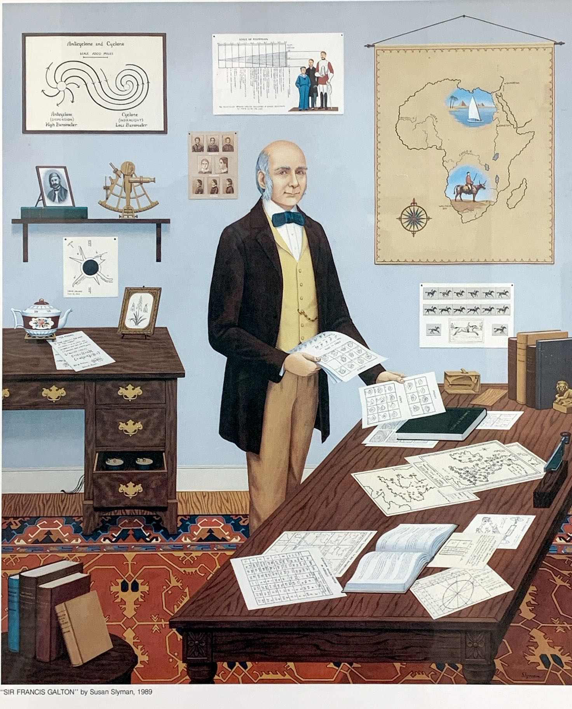

|

|
- Visual Answers to Scientific Questions
 (American Scientist, v. 107, Jul/Aug 2019)
(American Scientist, v. 107, Jul/Aug 2019)
- The Rise of Visual Thinking and Graphic Communication
(MSDS Lab talk, Utrecht, Oct. 24, 2019)
- Visual Thinking and Graphic Discovery
(Medium article, Oct. 2019)
- The Graphical Birth of Plate Tectonics
(CHANCE, 2020, v. 33)
- Galton's Gleam: Visual Thinking and Graphic Discoveries
(Significance, June 2020)
- Raiders of the Lost Tombs: The Search for Some Heroes in the History of Data Visualization
(Medium)
- Displaying Information: From Wolly Mammoths to the Great Migration
(In: International Encyclopedia of Education, 4th Ed.)
|